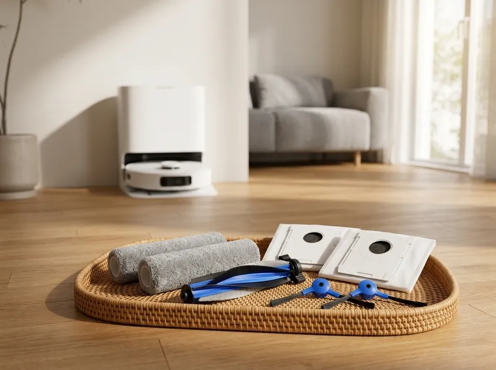
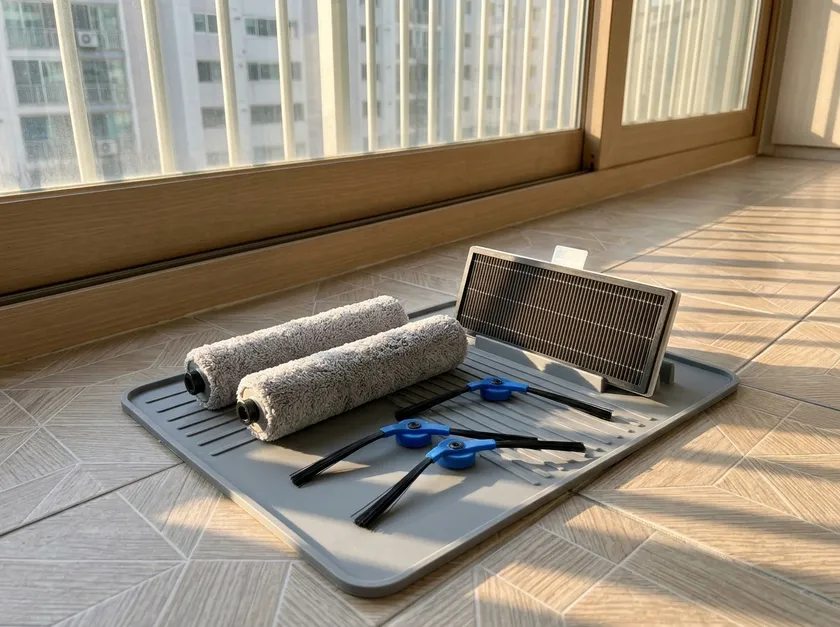

에코백스 (ECOVACS)
에코백스 T90·T80 옴니 직배수 물걸레 냄새 관리｜롤러 교대 건조와 1년 세트
글·구성: 제이상점 · 기종별 1:1 호환 실물 점검 · 교체 주기 비교표 · 스마트스토어 패키지 안내

핵심 관리 · 선택 체크포인트
- 청소 예약은 매일 꼬박꼬박 돌아가는데 요즘 부쩍 직배수 하부장이나 거실 코너에 설치한 에코백스 T90·T80 옴니 스테이션에서 물걸레 세척 후 습한 냄새가 올라오거나 롤러 끝에 머리카락이 끼는 증상 때문에 신경 쓰이셨나요?
- 냄새와 흡입력 차이를 만드는 에코백스 T90·T80 옴니 교대 케어 포인트: 실사용 만족도를 가르는 핵심 부위는 단연 화이트·블루 스트라이프 오즈모 원통형 롤러 걸레와 블루·블랙 제로탱글 V자 브러시입니다.
- 에코백스 T90·T80 옴니 냄새·흡입력 복원 부위별 점검 기준표: 번거로운 분해 수리 전에 아래 세 가지 핵심 구간만 순서대로 교대 점검해 주셔도 바닥 뽀송함과 집진 효율이 눈에 띄게 달라집니다.
- 여분 교대가 편해지는 에코백스 T90·T80 옴니 기간별 옵션 선택 가이드: 특히 직배수 키트로 싱크대·다용도실 하부장에 매립해 쓰시는 가정은 공기 순환이 거실보다
- 현재 대표 구성 기준가 71,100원대(옵션·할인 혜택에 따라 스토어 결제 화면 기준 상이)로 운영 중이니 우리 집 청소 주기와 남은 재고를 대조한 뒤 제이상점 에코백스 디봇 T90 프로 옴니·T80 옴니 스마트스토어 상세 옵션에서 가장 실속 있는 구성을 선택해 보세요.
실물 부품 디테일 · 관리 구성 이미지




부품 규격 · 점검 기준표
| 집중 관리 포인트 | 에코백스 T90·T80 옴니 적용 부품 규격 | 쾌적함 유지하는 실전 교대 루틴 |
|---|---|---|
| 직배수·밀폐 하부장 습기 케어 | 분리형 원통 롤러 슬리브 2개 교대 | 하부장 내 습기가 찰 때 롤러를 빼서 수직 통풍 건조 후 마른 예비 롤러 장착 |
| 모서리·카펫 흡입력 유지 | 블랙 프레임 헤파필터 + V자 브러시 | 젖은 필터 재장착 절대 금지 (예비 필터 교대로 모터 과부하 예방) |
| 옴니 세척조·오수 라인 관리 | 블루 탭 더스트백 + DEEBOT 전용 세정액 | 세척 트레이 슬러지 주 1회 헹굼 및 바닥 전용 저포 세제 정량 보충 |
💡 교체 주기가 겹치는 필터·브러시·물걸레·더스트백은 단품 배송비를 여러 번 내기보다 에코백스 T90 프로 옴니 기간별 세트(3개월·6개월·1년)로 미리 구비해 두면 물세척 후 24시간 교대 건조까지 끊김 없이 관리할 수 있습니다.
자주 묻는 질문 (FAQ)
Q. 새 블루 탭 더스트백을 넣었는데 도크에서 더스트백 미장착 알림이 뜨면 어떻게 하나요?
A. 화이트 플라스틱 칼라 카드가 도크 가이드 레일 끝단 센서 스위치까지 딸깍 소리가 나게 밀착되지 않았을 때 주로 발생합니다. 전원을 끄거나 도크 커버를 다시 열어 카드를 수평으로 끝까지 밀어 넣어 주세요.
Q. 에코백스 창문 로봇청소기(WINBOT) 세정액을 디봇 T90·T80 물통에 넣어도 되나요?
A. 안 됩니다. 유리창 전용 용액과 바닥 로봇청소기용 포뮬러는 성분과 거품 특성이 다릅니다. 바닥 물걸레 세척에는 반드시 DEEBOT 라벨이 표기된 에코백스 디봇 정품 전용 클리너 1L (1병·2병 옵션) 전용 클리너를 사용해 주세요.
제이상점 1:1 검수 추천 패키지 · 구매 안내
메인 추천 구성
대표 구성 참고가 71,100원대 (옵션·쿠폰별 스마트스토어 결제 화면 기준)
1년 세트6개월 세트3개월 세트
![[정품] 에코백스 세제 세정제 소모품 T90 T80 X5 X8 X11](../../assets/img/ecovacs-cleaner-product-274f99ea.webp)
☑️ 주문 전 확인해 두면 좋은 제이상점 안심 포인트
· 기종별 1:1 전용 규격 검수: 모델명·연식에 맞는 호환·정품 구성을 검수해 오주문 불안을 줄였습니다.
· 해외직배송 미리 주문 팁: 중국 구매대행·해외직배송 상품이므로 마지막 여분 1개를 꺼내 쓰는 시점에 개인통관고유부호와 함께 여유 있게 주문해 두시면 훨씬 경제적인 비용으로 끊김 없이 교체하실 수 있습니다.
· 기종별 1:1 전용 규격 검수: 모델명·연식에 맞는 호환·정품 구성을 검수해 오주문 불안을 줄였습니다.
· 해외직배송 미리 주문 팁: 중국 구매대행·해외직배송 상품이므로 마지막 여분 1개를 꺼내 쓰는 시점에 개인통관고유부호와 함께 여유 있게 주문해 두시면 훨씬 경제적인 비용으로 끊김 없이 교체하실 수 있습니다.
📖 더 많은 가정 내 사용 스토리와 상세 후기가 궁금하시다면
📱 네이버 블로그 모바일 원문 보기 ↗